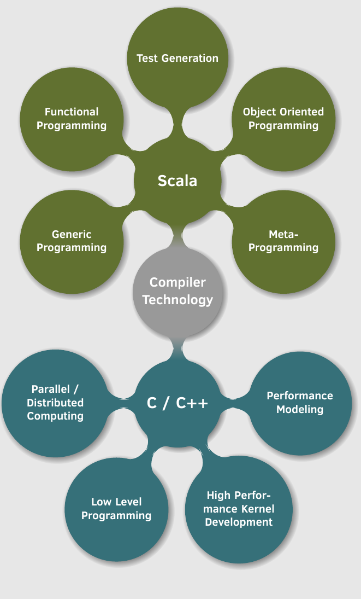
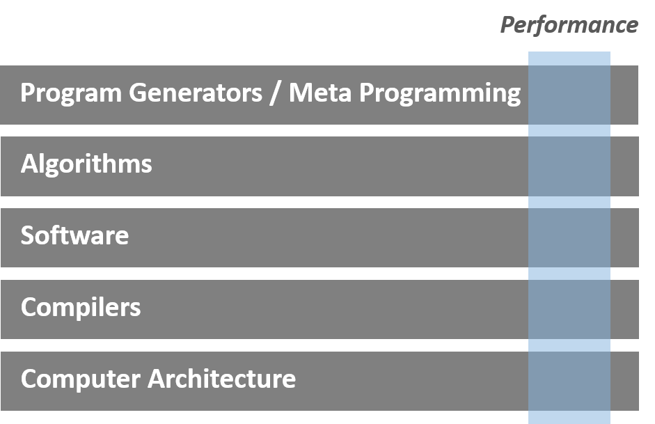

firstname.lastname@gmail.com
Welcome!
I'm former PhD. student at ETH Zürich in the group of Markus Püschel.
I'm currently in the process of interviewing for industry opportunities!
My previous research tried to tackle the efficient construction of program generators targeting high-performance code.
The results, presented in my thesis and in my latest
publication, are able to extend generic programming to include the time dimension.
As such we are able to abstractly reason about the execution time (pre-computation vs computing at runtime) within a code generator.
This is demonstrated using subset of the original Spiral system. We use modern program language features such as heavy use of embedded DSLs and staging (meta programming) utilizing the Lightweight Modular Staging framework developed by Tiark Rompf.
Our final prototype is able to implement the core logic of a FFT code generator for both fixed and general size input within less than 200 lines of Scala code and can be found here.
Skills

Within my career path so far I was able to acquire a broad skill set gravitating around the topic of performance and code generation. As highlighted in the two pictures, my work so far required a very vertical view of the hardware/software stack of an application.
As such, I possess a good understanding of low-level details, such as the low details of e.g. Intel processors, all the way up to very high-level concepts such as type driven meta-programming in Scala.

Publications
Generic Programming Applied on the Time Dimension of Meta Programming
How to apply generic programming techniques to challenges in metaprogramming in the context of high performance code generators.
Github /
Thesis /
Publication
Random Testing for Compilers
A tool for differential testing of compilers using random instances of a given intermediate representation.
Github /
Publication
Generating Vector Instructions
A demonstration on how to provide modular and extensible support for modern SIMD vector architectures in a DSL-based generator.
Publication
Applying the Roofline Model
We show how to produce roofline plots with measured data on recent generations of Intel platforms.
Github /
Publication
Spiral in Scala
We implement a small, but representative subset of the program generator Spiral in Scala using the Lightweight Modular Staging (LMS) framework.
Github /
Publication
High Performance Distributed Bio-Inspired Optimization Library
A parallel software library that implements the Evolution Strategy with Covariance Matrix Adaptation (CMAES) using MPI for efficient parallelization.
Github /
Publication
Student Projects
- Leo Büttiker: Rewrite Engine for Staged Expressions, August 2013
- Maksim Rubanov: Extensions of the Roofline Model, April 2013
- Ruedi Steinmann: Applying the Roofline Model, April 2012